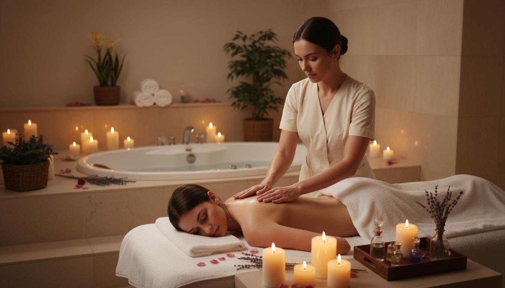
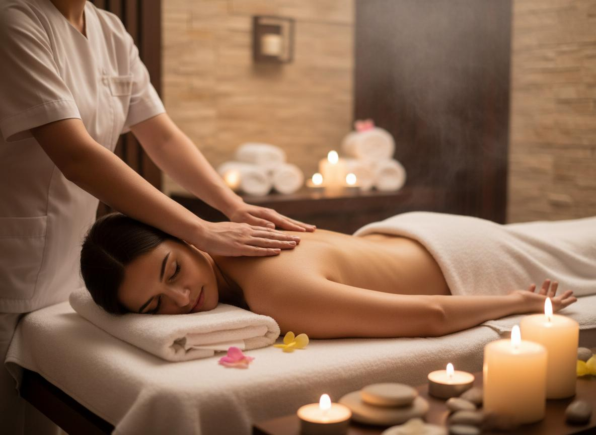
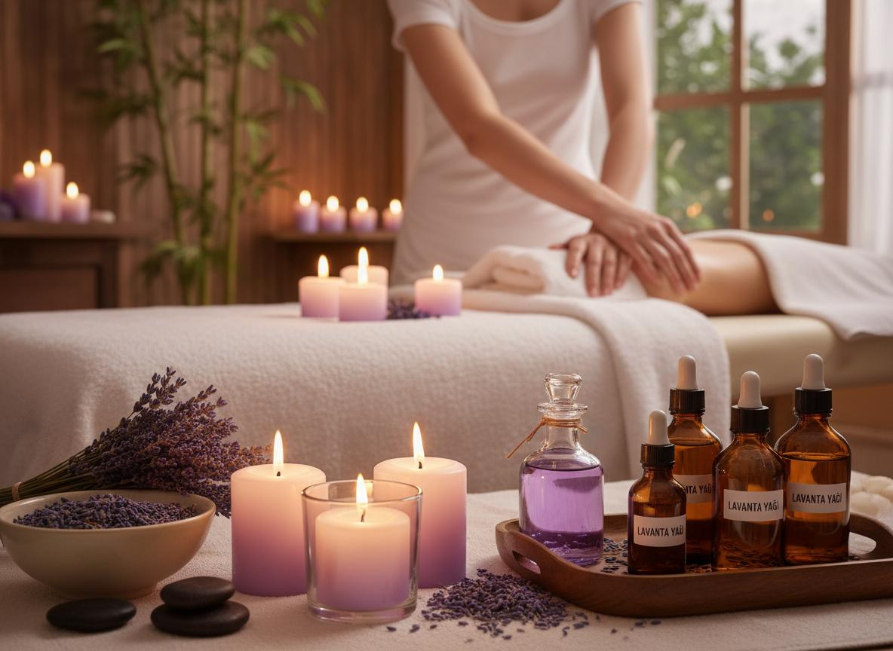

Trabzon'un En İyi Masaj Hizmeti
Trabzon Masaj Salonu olarak, 10 yılı aşkın tecrübemizle şehrin her noktasına profesyonel masaj hizmeti sunuyoruz. Ortahisar, Akçaabat, Yomra, Arsin, Araklı ve tüm Trabzon ilçelerindeki misafirlerimiz, uzman terapistlerimizin ellerinde benzersiz bir rahatlama deneyimi yaşıyor.

Masajın Faydaları Nelerdir?
Masaj, binlerce yıldır insanlığın stresle baş etme ve iyileşme yöntemlerinden biri olmuştur. Modern bilim, düzenli masajın fiziksel ve mental sağlık üzerindeki olumlu etkilerini kanıtlamıştır:
- Kas gerginliğini azaltır - Derin doku teknikleriyle kas düğümlerini çözer
- Kan dolaşımını hızlandırır - Dokulara daha fazla oksijen taşınmasını sağlar
- Stres hormonlarını düşürür - Kortisol seviyelerini azaltarak rahatlama sağlar
- Uyku kalitesini artırır - Melatonin salınımını düzenler
- Bağışıklık sistemini güçlendirir - Lenf dolaşımını destekler
- Ağrıları hafifletir - Kronik ağrılarda doğal ağrı kesici etki
Sunduğumuz Masaj Türleri
Klasik Masaj (İsveç Masajı)
Geleneksel İsveç masaj teknikleri ile kas gevşetme ve rahatlama. 50 dakika
- Tüm vücut için uygun
- Kan dolaşımını hızlandırır
- Stresi azaltır
Aromaterapi Masajı
Doğal uçucu yağlarla zihinsel ve fiziksel denge. 60 dakika
- Lavanta, gül, nane yağları
- Ruh halini düzenler
- Cildi nemlendirir
Spor Masajı
Sporcular için derin doku masajı ve performans artırıcı terapi. 60 dakika
- Kas yaralanmalarını önler
- Esnekliği artırır
- İyileşmeyi hızlandırır
Sıcak Taş Masajı
Volkanik taşlarla derin gevşeme ve enerji dengeleme. 75 dakika
- Isı terapisi etkisi
- Derin kas gevşemesi
- Enerji akışını dengeler
Hamile Masajı
Özel eğitimli terapistlerimiz tarafından güvenli hamile masajı. 45 dakika
- Bel ve sırt ağrılarına özel
- Özel pozisyonlarda uygulanır
- 12. haftadan sonra önerilir
Çiftlere Özel Masaj
Sevdiklerinizle birlikte eşsiz bir rahatlama deneyimi. 60 dakika (kişi başı)
- Özel çiftler odası
- Romantik atmosfer
- Özel paket seçenekleri
Neden Trabzon Masaj Salonu?
Sertifikalı Terapistler
Tüm terapistlerimiz uluslararası geçerli sertifikalara sahip, deneyimli profesyonellerdir.
Doğal Ürünler
Sadece organik, paraben içermeyen, cilt dostu yağlar ve kremler kullanıyoruz.
Tam Hijyen
Her seanstan sonra tüm ekipmanlarımız sterilize edilir, tek kullanımlık malzemeler kullanılır.
Kolay Ulaşım
Ortahisar merkezde, tüm ilçelere yakın konumumuzla hizmetinizdeyiz.
Masaj Seansı Nasıl İlerler?
Randevu ve Karşılama
Online veya telefonla randevu alın, salonumuzda sıcak bir karşılama ile başlayın.
Konsültasyon
Terapistiniz sağlık durumunuzu ve ihtiyaçlarınızı dinler, size en uygun masajı önerir.
Masaj Seansı
Rahat bir ortamda, profesyonel tekniklerle masajınız uygulanır.
Dinlenme ve Bitiş
Masaj sonrası bitki çaylarımızdan içerek dinlenin, evinize tazeleyerek dönün.
Galeri




Müşteri Yorumları
"Trabzon'da denediğim en iyi masaj salonu. Özellikle aromaterapi masajı muhteşemdi. Terapist çok ilgiliydi, ortam çok hijyenikti. Kesinlikle tavsiye ederim!"
"Spor masajı için geldim, çok memnun kaldım. Sporcu vücudunu gerçekten iyi biliyorlar. Fiyatlar da çok uygun, herkese tavsiye ederim."
"Eşimle birlikte çiftler masajı yaptırdık. Harika bir deneyimdi, çok romantik bir atmosfer vardı. Yıldönümümüzde tekrar geleceğiz!"
Sıkça Sorulan Sorular
Masaj seanslarımız genellikle 50-60 dakika sürmektedir. Ancak ihtiyaçlarınıza göre 30 dakikalık ekspres seanslar ve 90 dakikalık deluxe paketler de sunmaktayız. İlk seansta terapistimiz size en uygun süreyi önerecektir.
Masajdan önce şunlara dikkat etmenizi öneririz:
- Ağır bir yemek yemeyin (en az 1-2 saat önce hafif bir şeyler yiyin)
- Bol su için (vücudunuzun detoks yapmasına yardımcı olur)
- Rahat, bol kıyafetler giyin
- Var olan sağlık sorunlarınızı (hamilelik, kalp rahatsızlığı vb.) terapistinizle paylaşın
- Alkol tüketmeyin
Ortahisar merkezdeki salonumuzdan tüm Trabzon ilçelerine hizmet vermekteyiz:
Ortahisar, Akçaabat, Yomra, Arsin, Araklı, Sürmene, Of, Çaykara, Maçka, Tonya, Vakfıkebir, Beşikdüzü, Şalpazarı, Düzköy, Hayrat ve diğer tüm ilçelerden kolayca ulaşabilirsiniz.
Yoğunluk durumuna göre walk-in müşterilerimizi de kabul ediyoruz, ancak garantili hizmet için randevu almanızı öneririz. Telefon, WhatsApp veya web sitemiz üzerinden kolayca randevu oluşturabilirsiniz.
Aşağıdaki ödeme yöntemlerini kabul ediyoruz:
- Nakit
- Kredi Kartı (Visa, Mastercard)
- Banka Kartı
- Mobil Ödeme
- Taksitli Ödeme (3-6-9 taksit imkanı)
Trabzon'un Tüm İlçelerine Yakınız
Trabzon Masaj Salonu olarak, Ortahisar merkezdeki konumumuzla şehrin her noktasına kolayca ulaşılabilir durumdayız. Akçaabat, Yomra, Arsin, Araklı, Sürmene, Of, Çaykara, Maçka, Tonya, Vakfıkebir, Beşikdüzü, Şalpazarı, Düzköy, Hayrat ve diğer tüm Trabzon ilçelerinden misafirlerimizi ağırlamaktan mutluluk duyuyoruz.
Ortahisar ilçesinin merkezi konumu, tüm ilçelere eşit mesafede olmamızı sağlıyor. İster iş çıkışı, ister hafta sonu dinlenmek için bizi tercih edin, profesyonel masaj hizmetimizle kendinizi yenilenmiş hissedeceksiniz.